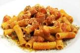

È uno dei piatti simbolo della tradizione culinaria laziale.Ha un sugo saporito e deciso composto da pocchi ingredienti fondamentali.

È uno dei piatti simbolo della tradizione culinaria laziale.Ha un sugo saporito e deciso composto da pocchi ingredienti fondamentali.

Primo piatto romano, caratterizzato da una crema ricca avvolgente a basa de tuorli,pecorino e pepe, resa croccante dal guanciale.
Piatto pilastro della cucina romana, rinominato per la sua incredibile semplicitá e il gusto intenso.